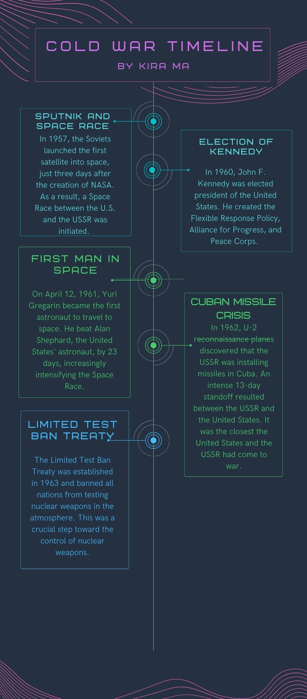
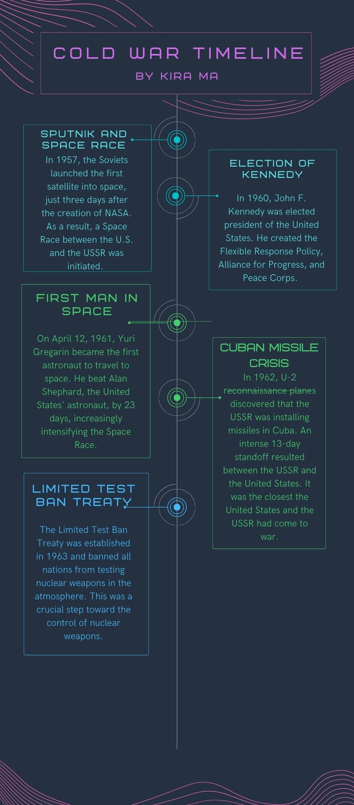
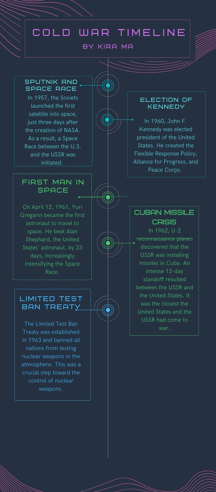
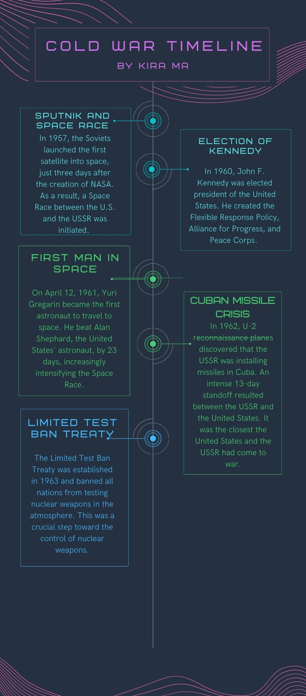

This is my final performance task for my APCSP class. It's a quiz that determines whether a person is healthy or not based on their answers to the health-related questions. It took a couple of days for me to pick a topic for this project and several weeks of writing the code.
This assignment was for my history class and it's a timeline of various Cold War events in chronological order. I enjoyed this assignment because not only was it educational, but I was able to be creative while designing it.